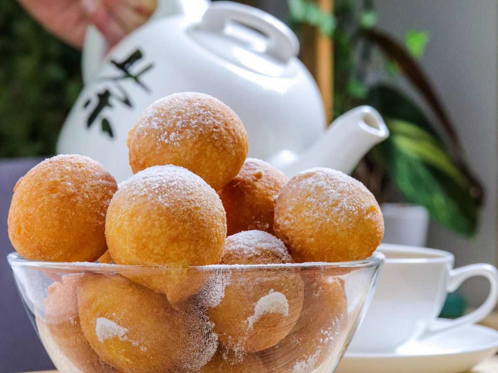

Fritule

Description
Fritule are a traditional south-western Slavic recipe predominantly made in Croatia and Slovenia.
They are soft and dry, often served with just powdered sugar as a topping.
Fritule are usually served at Christmas.
Ingredients
- Flour
- Fresh Cheese
- Rum
- Water
- Oil
Steps
- Add Flour
- Add Cheese
- Add Water
- Add Oil
- Add Rum
- Mix all the ingredients together
- Using two spoons or an ice cream scoop make balls and fry them in oil at around 90c